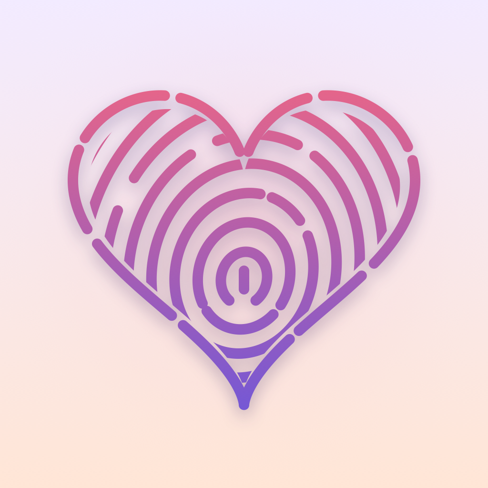
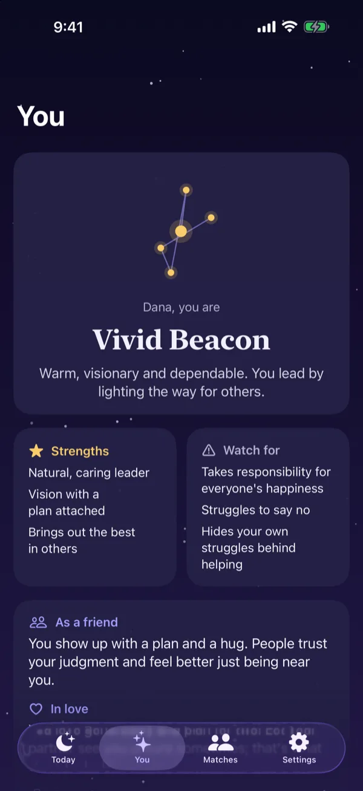
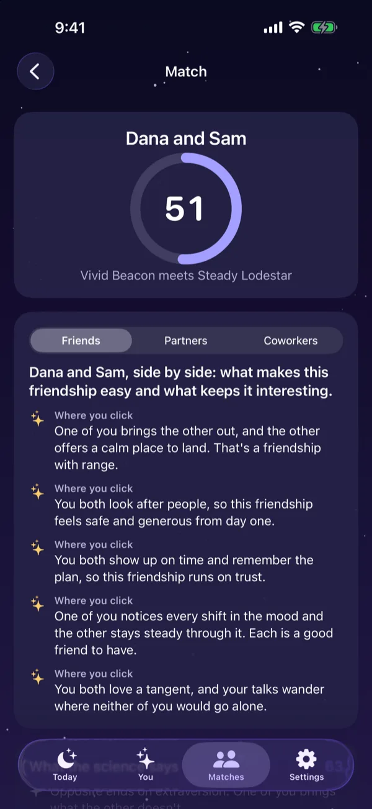
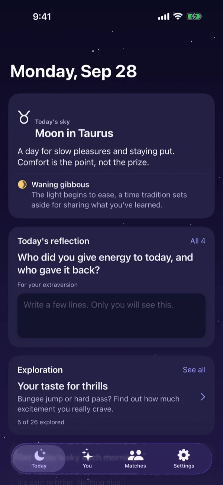
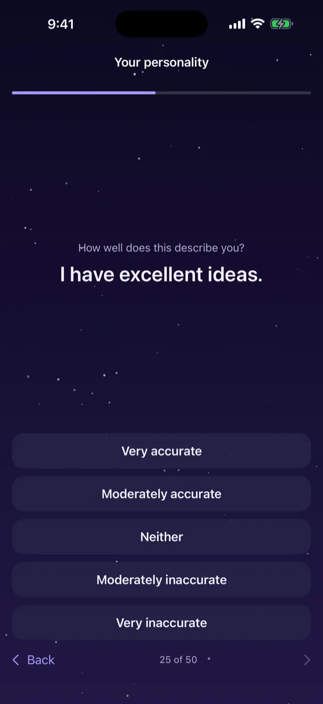
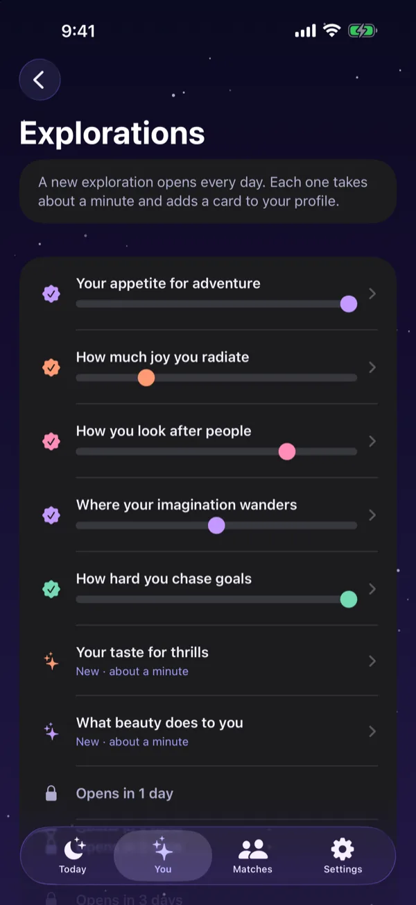
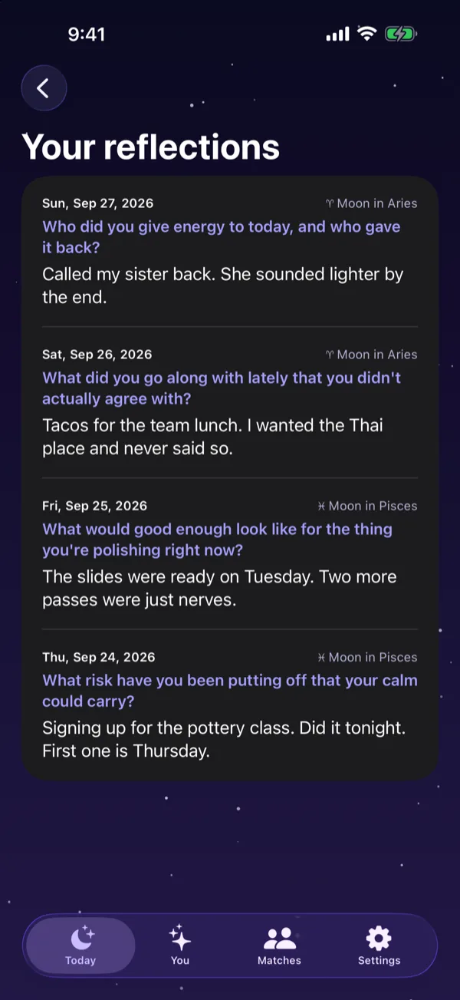
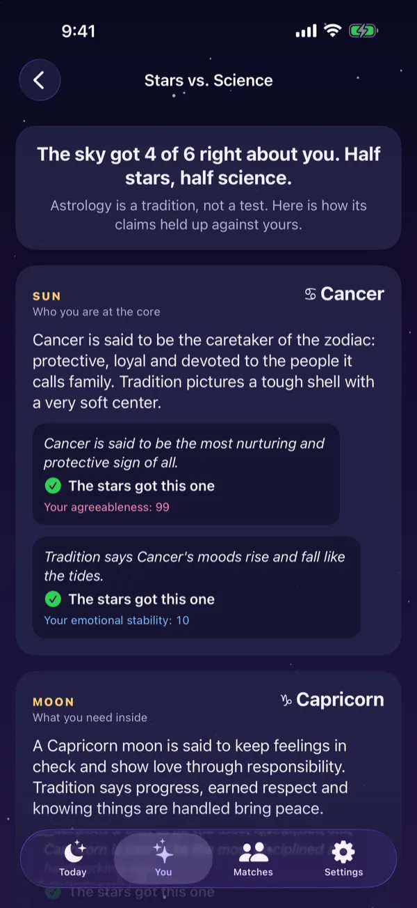

Heartprint
See the good in you and in the people around you. A real personality test, a type that leads with your strengths, and a simple way to see where you click with the people you love.
A look inside
-

Your type, strengths first
-

Where you and a friend click
-

Something new every day
-

Fifty questions, about six minutes
-

A new exploration each day
-

A journal that grows with you
-

The stars, fact-checked
A real test
Fifty questions from the Big Five, the model most personality psychologists use today, in about six minutes. Your scores are percentiles against published adult norms, not guesses.
Strengths first
You get one of sixteen types, Steady or Vivid, and a full report: as a friend, in love, at work, under stress and growing. Blind spots read as room to grow, never as flaws.
See where you click
Send a friend your link or QR code. Once they take the test, you both see where you click and where it takes a little care, for friends, partners and coworkers.
How you show care
A short quiz on how you show care and what makes it land for you: Noticing, Cheering on, Steadying or Making room. Your matches show how the two of you do it, too.
Something new every day
A short exploration opens each day for about a month, each one adding a card to your profile. The Today tab brings the real moon and a question worth sitting with.
A line for today
Today puts a warm line beside the moon for one of your big three. A mood for the day, never a forecast.
Reflections
Answer the day's question and keep it, along with the sky you wrote it under. The one part of the app that means more the longer you use it.
Someone you value
Some days, the reflection question is about a person who matters to you. A small way to notice the good in the people around you.
Stars vs. Science
Your sun, moon and rising, worked out on your phone, set beside what the test found. The sky gets some right and some wrong. The stars are the playful part, and the app keeps them separate from your results.
Private by design
No account and no server. Everything stays on your phone. A link you share holds your first name, your scores and your signs, and never your birthday.
Free
The whole thing. No ads, no subscription, no tracking.